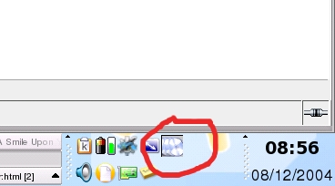

The tray is an icon on your task bar under Windows, KDE and Gnome used as a fast control without dealing with the full graphical interface.

Fig.01
Left click show/hide Jajuk main window. By default, jajuk is launched with the -notaskbar option to hide jajuk in the taskbar when it is hidden. You can remove this option in the shortcut.
Right click show a popup menu for quick Jajuk control:
o Show Jajuk at startup [default=true]: if checked, Jajuk window is shown at startup. Otherwise, only the tray is visible at startup. This option can be useful when using a random startup for instance or when you don't care to deal with Jajuk functionalities but you just want to start to play music.
 Pause current track
Pause current track
 Stop current track
Stop current track
 Play previous track. When possible, it is previous track from
selection, otherwise, it is previous track in collection. Right-click or left-click+[SHIFT]=previous album.
Play previous track. When possible, it is previous track from
selection, otherwise, it is previous track in collection. Right-click or left-click+[SHIFT]=previous album.
 Play next track. When possible, it is next track from selection,
otherwise; it is next track in collection. Right-click or left-click+[SHIFT]=next album.
Play next track. When possible, it is next track from selection,
otherwise; it is next track in collection. Right-click or left-click+[SHIFT]=next album.
 Play shuffle: launch a shuffle track from the entire collection (only
from mounted and ready devices).
Play shuffle: launch a shuffle track from the entire collection (only
from mounted and ready devices).
 Play best of: launch one of your favorite track (learned with dynamic
rate) and with a bit of random.
Play best of: launch one of your favorite track (learned with dynamic
rate) and with a bit of random.
 Play novelties: launch one of newest tracks from your collection with
a bit of random.
Play novelties: launch one of newest tracks from your collection with
a bit of random.
 Continue album: Useful when using shuffle mode and you find an album
that you want to play completely.
Continue album: Useful when using shuffle mode and you find an album
that you want to play completely.
 About Jajuk: display the About view.
About Jajuk: display the About view.
 Mute/Unmute
Mute/Unmute
 Exit Jajuk
Exit Jajuk
You can increase or decrease sound volume by using the mouse wheel over the tray popup.